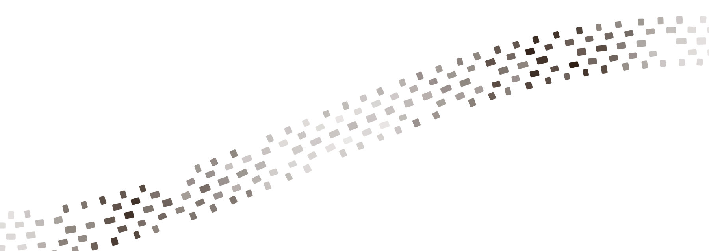

A note from Heidi

I grew up around dirt bikes. My dad raced professionally, got picked up by Suzuki, and won the Blackwater 100 in West Virginia more than once. My uncle wrote the scoring software for amateur races, so I spent my childhood working amateur races, local and national, and every year at Loretta Lynn's in Tennessee.
So I know how much goes into a race weekend, and how often a track owner gets asked "are you open?"
These days I do marketing for a living: brands, websites, and getting businesses to show up when people ask Google or ChatGPT where to go. Pineville is one of the closest tracks to Charleston, riders clearly love it, and right now the only way to know if it's open is to scroll Facebook. So I built the website I think it deserves.
The rest of this page walks through it.
Heidi See more of my work at heidimdains.github.io ↗